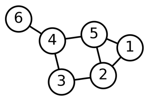

Tutorial 05¶
Solve the following systems of linear equations
\[\begin{split} \mbox{(a)} \ \begin{cases} 5x - y + 2z = 6 \\ x + 2y - z = -1 \\ 3x + 2y - 2z = 1\\ \end{cases} \end{split}\]
\[\begin{split} \mbox{(b)} \ \begin{cases} 2x - y + 3z = 3 \\ 2x + y + 4z = 4 \\ 2x - 3y + 2z = 2\\ \end{cases} \end{split}\]
Three different species of insects are reared together in a laboratory cage. They are supplied with two different types of food each day. Each individual of species 1 consumes 3 units of food \(A\) and 5 units of food \(B\), each individual of species 2 consumes 2 units of food \(A\) and 3 units of food \(B\), and individual of species 3 consumes 1 unit of food \(A\) and 2 units of food \(B\). Each day, 500 units of food \(A\) and 900 units of food \(B\) are supplied. How many individuals of each species can be reared together? Is there more than one solution? What happens if we add 550 units of a third type of food, called \(C\), and each individual of species 1 consumes 2 units of food \(C\), each individual of species 2 consumes 4 units of food \(C\), and each individual of species 3 consumes 1 unit of food \(C\)?
Networks are abstractions of real systems used to identify and study patterns of connectivity between the individual units that compose those systems. Networks (often referred to as graphs) are mathematically defined as a set of nodes, or vertices, (representing the individual units) and a set of links, or connections, between these nodes, which account for the interaction patterns within the studied systems. In Ecology, graphs have been widely used in studies investigating food-webs, plant-pollinator interactions, and disease transmission in populations.
If the nodes of a network of size \(N\) are indexed with positive integers such as \(i = 1, 2, \ldots, N\), an useful method for representing the structure of a network is to construct a matrix \(A\) for which the elements \(a_{ij}\) are given by:
\[\begin{split}a_{ij} = \begin{cases}1,\ \mbox{if nodes}\ i \ \mbox{and}\ j \ \mbox{are linked} \\ 0,\ \mbox{otherwise} \end{cases}\end{split}\]Matrix \(A\) is called the adjacency matrix of the network. One example of a network with \(6\) nodes is shown below.
(a) Based on the graphical representation of this network, write down its adjacency matrix.
(b) By the definition of the adjacency matrix, the sum of the matrix elements on row \(i\), \(k_i = \sum_{j=1}^N a_{ij}\), corresponds to the number of links of node \(i\). The quantity \(k_i\) is called the degree of node \(i\). Calculate the corresponding degrees for each node on the previous network.
(c) The Laplacian matrix is a mathematical object that can be used to find many useful properties of a network. By definition, \(L\) is constructed as
\[ L = A - D \]
Where \(A\) is the adjacency matrix, and \(D\) is the degree matrix. The degree matrix \(D\) is a diagonal matrix which contains information about the degree of each node. With your answer for itens (a) and (b), calculate \(L\).
(d) Use R/Python to numerically calculate the eigenvalues of the Laplacian matrix.
Write each system in matrix form
\[\begin{split} \mbox{(a)} \ \begin{cases} 2x_2-x_1 = x_3 \\ 4x_1 + x_3 = 7x_2 \\ x_2 - x_1 = x_3\\ \end{cases} \end{split}\]
\[\begin{split} \mbox{(b)} \ \begin{cases} 2x_1 - 3x_2 = 4 \\ -x_1 + x_2 = 3 \\ 3x_1 = 4\\ \end{cases} \end{split}\]
Suppose that
\[\begin{split}A = \begin{pmatrix} 2 & 4 \\ 3 & 6 \end{pmatrix} \ \ \ \text{,}\ \ \ X = \begin{pmatrix} x \\ y \end{pmatrix} \ \ \ \text{and}\ \ \ B = \begin{pmatrix} b_1 \\ b_2 \\ \end{pmatrix}\end{split}\](a) Write \(AX = B\) as a system of linear equation.
(b) Show that if
\[\begin{split} B = \begin{pmatrix} 3 \\ \frac92 \\ \end{pmatrix} \end{split}\]then \(AX = B\) has infinitely many solutions. Graph the two straight lines associated with the corresponding system of linear equations, and explain why the system has infinitely many solutions.
(c) Find a column vector
\[\begin{split}B = \begin{pmatrix} b_1 \\ b_2 \\ \end{pmatrix}\end{split}\]so that \(AX = B\) has no solutions.
Assume that a population is divided into three age classes and that 80% of the individuals age 0 and 10% of the individuals age 1 survive until the end of the next breeding season. Assume further that individuals age 1 have an average of 1.6 offspring and individuals age 2 have an average of 3.9 offspring. If, at time 0, the population consists of 1000 individuals age 0, 100 individuals age 1, and 20 individuals age 2, find the projection matrix and the age distribution at time 3.
Consider the following projection matrix representing a population with five age classes:
\[\begin{split} P = \begin{pmatrix} 0 & 5 & 3 & 2 & 1 \\ 0.9 & 0 & 0 & 0 & 0 \\ 0 & 0.3 & 0 & 0 & 0 \\ 0 & 0 & 0.1 & 0 & 0 \\ 0 & 0 & 0 & 0.05 & 0 \\ \end{pmatrix} \end{split}\]
(a) Making use of Python or R code, begin with a population distributed as \((0,0,0,0,10)\) individuals at time \(t=0\), project the population at time \(t=20\), and plot the total number over time. Plot the logarithm of the total population over time.
(b) Repeat the above but begin with \((80,16,5,1,1)\) individuals. How do these results compare to the results in (a) ?
In the problems below, find the eigenvalues \(\lambda_1\) and \(\lambda_2\) and corresponding eigenvectors \(\mathbf{v_1}\) and \(\mathbf{v_2}\) for each matrix \(B\). Determine the equations of the lines through the origin in the direction of the eigenvectors \(\mathbf{v_1}\) and \(\mathbf{v_2}\), and graph the lines together with the eigenvectors \(\mathbf{v_1}\) and \(\mathbf{v_2}\) and the vectors \(A\mathbf{v_1}\) and \(A\mathbf{v_2}\).
\[\begin{split} \text{(a)} \ \ B = \begin{pmatrix} 2 & 3\\ 0 & -1 \end{pmatrix} \end{split}\]
\[\begin{split} \text{(b)} \ \ B = \begin{pmatrix} 3 & 6\\ -1 & -4 \end{pmatrix} \end{split}\]
Suppse that
\[\begin{split} P = \begin{pmatrix} 0.5 & 2.3\\ a & 0 \end{pmatrix} \end{split}\]
is the projection matrix of a population with two age classes. For which values of \(a\) does this population grow?
Suppose that
\[\begin{split} P = \begin{pmatrix} 0.5 & 2.0\\ 0.1 & 0 \end{pmatrix} \end{split}\]
is the projection matrix of a population with two age classes.
(a) If you were to manage this population, would you need to be concerned about its long-term survival?
(b) Suppose that you can improve either the fecundity or the survival of the zero-year-olds, but due to physiological and environmental constraints, the fecundity of zero-year-olds will not exceed 1.5 and the survival of zero-year-olds will not exceed 0.4. Investigate how the growth rate of the population is affected by changing either the survival or the fecundity of zero-year-olds, or both. What would be the maximum achievable growth rate?
(c) In real situations, what other factors might you need to consider when you decide on management strategies?